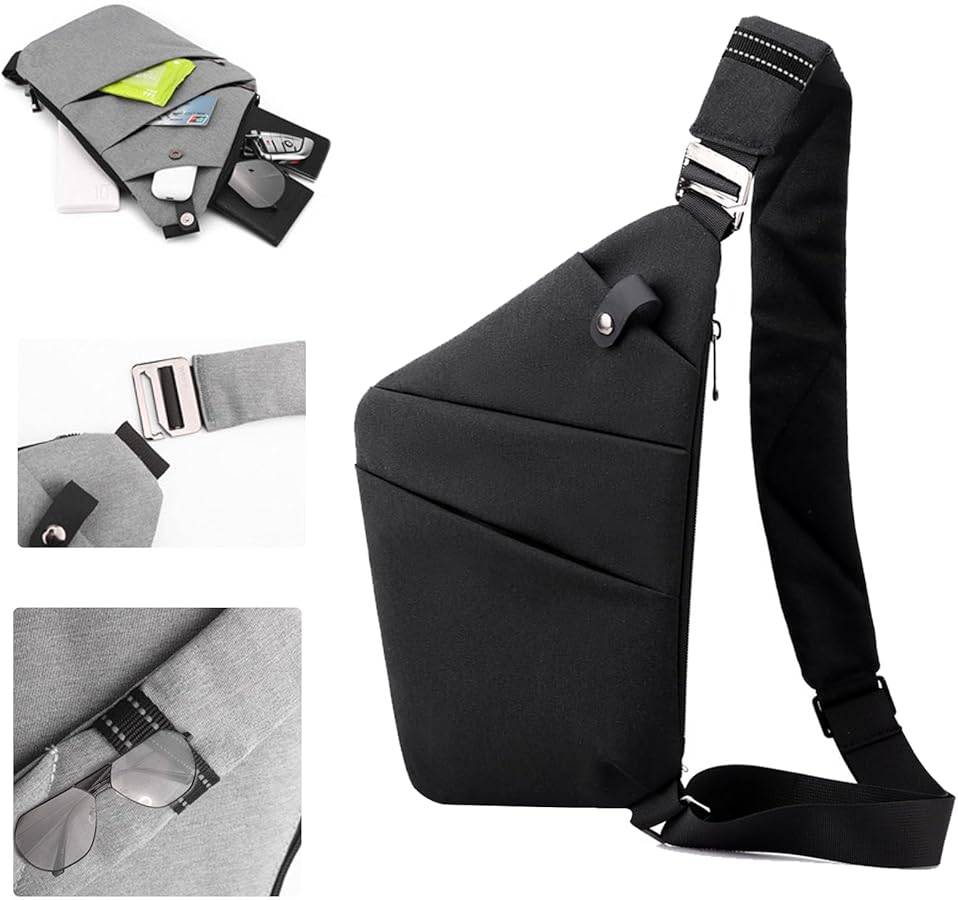
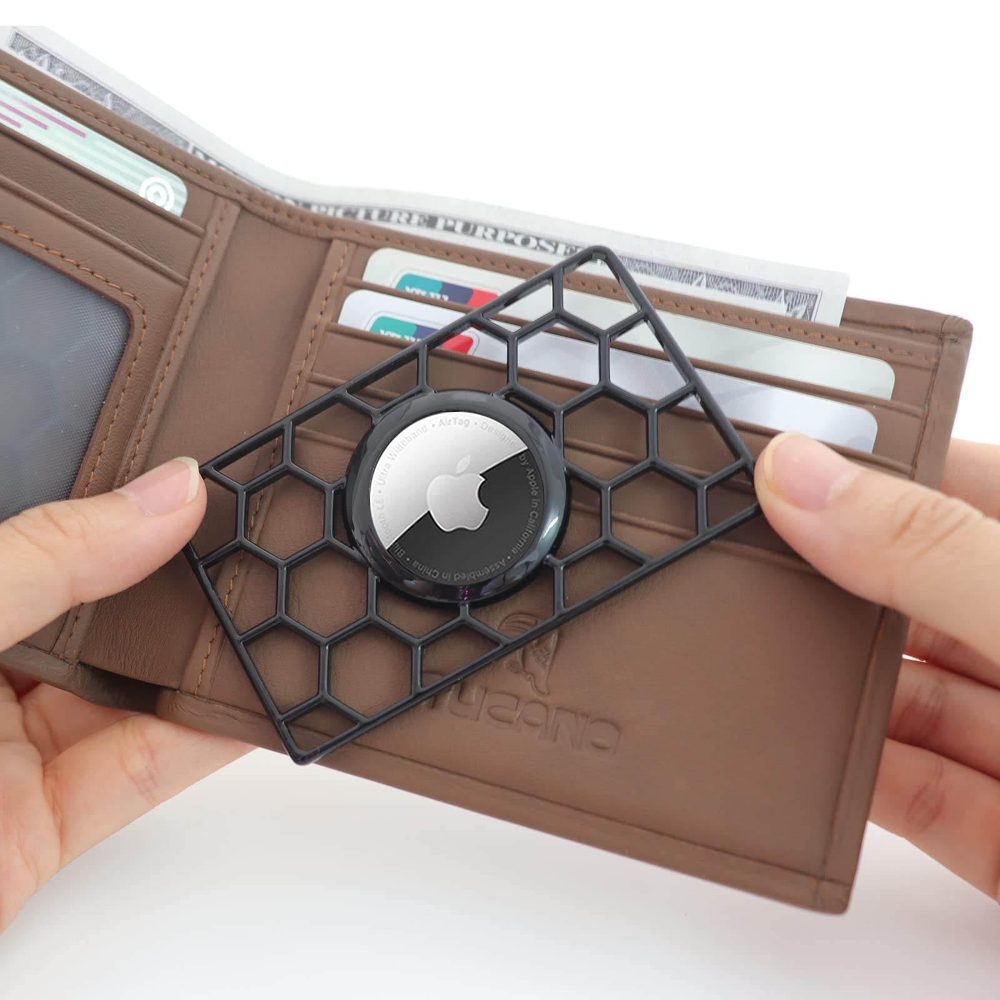

Problem
Problem Definition
City residents carrying physical wallets in crowded areas are highly vulnerable to pickpocketing and theft.
This results in financial loss and compromised personal information for victims in densely populated environments.
Problem Motivation
Many of us travel or plan to travel, especially to places like Europe, where pickpocketing is common in tourist areas.
Losing a wallet not only means losing money, but also IDs, cards, and the ability to continue a trip smoothly.
Current solutions don’t fully prevent the issue or alert users in real time.
Existing Solutions
Solution 1
Anti-Theft Bags
- What works well
- Blocks card scanning (RFID protection)
- Hidden zippers / compartments
- Some are Slash-resistant
- What is missing
- Doesn’t help recover the item once it’s gone
- No real-time alert system
- Can be bulky or less convenient for everyday use

Solution 2
Smart Trackers (Apple AirTag)
- Description of current solution
- Small Bluetooth-enabled tracking device that can be placed inside a wallet
- Uses Apple's Find My network to locate lost or stolen items
- What works well
- Real-time location tracking through a large global network
- Helps recover lost or stolen wallets
- Compact and easy to carry without adding bulk
- Can notify users if they leave their wallet behind
- What is missing
- Does not prevent theft from happening
- Alerts may not trigger immediately during pickpocketing
- Requires Apple ecosystem to function fully
- Tracker can be removed and discarded by the thief
